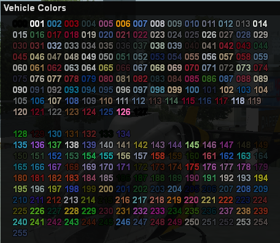

Valrise Tutorials
Your guide to mastering Valrise Gaming. From basic controls to advanced roleplay tactics, find everything you need to know here.

How to join Valrise RPG using Alyn mobile client?
Learn how to easily connect to Valrise RPG from your mobile device using the Alyn client. This guide walks you through the installation, setup, and joining process so you can start playing on the go!

New players guide
New to Valrise? This essential guide covers everything you need to know, from creating your character and understanding the UI to landing your first job and interacting with the community. Start your journey on the right foot!

Getting Passport
Need to travel or verify your identity in Valrise? This quick guide shows you the simple process of obtaining your official passport at City Hall. Follow these easy steps to get documented and unlock new opportunities in the city!

Getting Driving License
Ready to hit the road in Valrise? This step-by-step guide shows you exactly how to obtain your driver's license at the DMV. From the written test to the practical exam, we'llwalk you through the entire process so you can get behind the wheel legally.

About Black Market
Dive into the underground economy of Valrise. This guide reveals the secrets of the Black Market, showing you where to find it, how to access its illicit goods, and how to trade safely without getting caught. Essential viewing for aspiring criminals.

Police Job
Join the force and uphold the law in Valrise. This guide covers the basics of becoming a police officer, from joining the academy to making your first arrest. Learn about police procedures, equipment, and how to keep the city safe.

Trucker Job
Get behind the wheel of a big rig and haul cargo across San Andreas. This guide covers how to start your career as a trucker, from picking up contracts to making deliveries and earning a steady income.

Heroin Production
Learn the high-risk, high-reward process of producing and distributing heroin. This guide covers everything from acquiring raw materials to cooking and selling on the streets of Valrise.

Meth Production
Step into the volatile world of methamphetamine production. This tutorial shows you how to set up a meth lab, cook batches, and navigate the dangerous market for this powerful stimulant.

Weed Farming
Get started in the lucrative cannabis business. This guide covers the essentials of growing and harvesting weed, from planting seeds in hidden locations to selling your final product.

Jewelry Heist
Master the art of the smash-and-grab. This guide shows you how to successfully execute the high-stakes Jewelry Heist, from breaching security to escaping with a bag full of diamonds.

Bank Heist
It's the ultimate score. Learn the step-by-step process for pulling off a Bank Heist, including vault cracking, crowd control, and coordinating a clean getaway. Big risks, bigger rewards.

Securicar Heist
Intercept a moving goldmine. This tutorial covers the tactics for ambushing and robbing an armored Securicar, from disabling the vehicle to securing the cash before the cops arrive.

Museum Heist
Steal priceless artifacts under the cover of night. This guide details the stealth and strategy required to breach the Museum, bypass security systems, and escape with valuable exhibits.

Store Robbery
A classic criminal enterprise. Learn the quickest way to rob a convenience store, from intimidating the clerk to grabbing the cash from the register and making a swift exit.

ATM Robbery
Need quick cash? This tutorial demonstrates how to blow open an ATM for a fast and explosive payday. Learn the tools and techniques to crack into these cash machines across the city.

Tuner Mission
Boost high-end sports cars for a big payday. This guide shows you how to track, steal, and deliver valuable tuner vehicles while evading the police and rival thieves.

Submarine Mission
Dive deep into a covert operation. This tutorial walks you through piloting a submarine to retrieve illicit packages from the ocean floor, a stealthy and profitable venture.

Drug Van Mission
Take on the risky job of transporting narcotics across the state. Learn the best routes and tactics to successfully move a van full of drugs to the drop-off point without getting busted.

Cargobob Mission
Take to the skies in a heavy-lift helicopter. This guide details how to use the Cargobob to airlift valuable containers and deliver them to secure locations for a massive reward.

Thief Mission
Embrace the life of a car thief and turn hot wheels into cold cash. This guide covers the thief mission, showing you how to locate high-value target vehicles, steal them, and deliver them to the drop-off point for your reward.
How to go on police duty
- To start working as a police officer you need to head to LSPD (gps 2)
- Pass the entry exam to be enlisted as SAPD volunteer in SAPD group (Answers of these questions can be answered as "1" or "2")
- After passing the exam you can head to the locker room and start your job as SAPD volunteer
Essential Commands
/tgto take duty equipement from department/lrto talk in police radio/ldepto talk in department radio (emergency linked with SAFD and EMS)/lcuffto cuff a suspect/lmirto say miranda rights/ltaserto unholster your taser/lbeanbagto unholster your beanbag/lrackto take equipement from patrol vehicle/lcallsignto assign your callsign/lcarsignto assign your vehicle sign to your callsign/lbarrierto use barriers/lfriskto search the player's inventory/lseizeto take illegal items from player's inventory (not all light up items is illegal, the white ones mean it is robbable)
While using police radio if you typed /r #dir it will send the location you are in with direction you are facing (only use when you don't know the area for updates)
If you want to become an official police officer, apply to San andreas police department at forum.sagov.us
Radio Codes
Ten Codes
- 10-3 - Stop talking in radio
- 10-4 - Understood
- 10-7 - Out of service
- 10-8 - In service
- 10-15 - Person in custody
- 10-16 - Request transport unit
- 10-19 - Returning to station
- 10-20 - Location
- 10-22 - Disregard last message
- 10-60 - Felony stop
- 10-53 - Officer down
- 10-76 - Responding to a scene
- 10-80 - Pursuit
- 10-86 - Traffic stop
- 10-97 - Arrived on scene
Codes
- Code 2 - Responding to scene without emergency sirens and lights
- Code 3 - Responding to scene with emergency sirens and lights
- Code 4 - Situation under control
- Code 6 - On foot and investigating a scene or traffic stop
- Code 14 - Resuming patrol
- Code 30 - Officer in danger, Immediate backup required
Hundred Codes
- 187 - Homicide
- 207 - Kidnapping
- 211 - Robbery
Abbreviations
- BOLO - Be On Lookout
- ETA - Estimated Time of Arrival
- TS - Traffic Stop
- CS - Callsign
- GSW - Gun Shot Wound
- VC - Visual Contact
- SU - Suspect
- LFU - Lethal Force Used
- TC - Traffic Collision
- P - Plate
Firefighter
- To start your job as firefighter (FD), you need to head to /gps 3 and find the equipment room
- After you enter, you will find an entry exam to be added to SAFD group. Pass the exam and you will be able to join fire duty as volunteer
- You will be provided with a chainsaw and fire extinguisher both will be useful for missions
Commands
/ladderto use the ladder of your firetruck/teto take your fire duty equipment/lrto talk in FD radio/depto talk in emergency radio (communication with police and EMS)/revive OR hold crouch button (C key)to revive nearest knocked players/sirento use the flashing lights/callsignto assign your callsign/carsignto assign your vehicle's sign with your callsign/missionto see any active mission/serviceto repair and respawn the vehicle/mto speak through the megaphon
Important notes:
- Chainsaw is used on wood and metal objects in missions (not to be used on players)
- Firetruck water is the best option to take out fires as they have explosives!
- You can get called by knocked players for revive requests
- If you wish to become an official firefighter, consider applying in forum.sagov.us
Paramedic
- To become an EMS employee head to /gps 4 and find the clothing room
- If you are not in the SAFD group, head to /gps 3 and enter the building and then pass the exam
Essential Commands
- To treat players' health inside ambulance
/heal (id) - To revive nearest knocked players
/reviveOR hold crouch button (C key) - To talk in EMS radio
/r - To talk in Department radio (with police, sheriffs, etc)
/dep - To treat NPC (mission)
/treatOR hold crouch button (C key) /callsignto update your callsign/carsignto assign your vehicle sign with your callsign/missionto see any active mission/serviceto repair and respawn the vehicle/mto speak through the megaphon/sirento use the flashing lights/bagbodyto bag a deadbody./carrybodyto carry the bagged body./storebodyto store the bagged body inside a vehicle's trunk./unloadbodyto unload the bagged body from the trunk./cremateto cremate deadbody inside the hospital for money/emsto open a menu with all the recent calls to claim them
Missions:
- There are many injuries that a NPC can suffer from, and some require the patient to be taken to hospital.
- First step is to treat the patient by holding button CROUCH (C key) OR
/treatnear the patient. - The name and id of the NPC is shown by aiming at an NPC (even with fists, just get the green triangle above head).
- After the patient has been treated, if he requires a hospital trip, you can use
/drag (id),/seat (id)to take the patient into the ambulance. - The mission is completed when you enter the hospital while DRAGGING the NPC.
- If you don't perform the actions in time, the patient dies and the mission ends.
Important notes:
- Knocked players who call EMS will be marked with red blip on map, if disappeared, then the guy either died or got revived.
- You can claim a call by pressing H key on foot or R key in the vehicle, or by the
/emsmenu (you have few seconds). - If you want to become an official paramedic apply at forum.sagov.us
Taxi Driver
- To start working as taxi driver head to
/gps 1753.3 -1864.3 13.5 - Get into any taxi vehicle
- Type
/taxi onto start working as taxi driver /taxi fareto set your price per meter- When someone enters your vehicle do
/taxi offerto offer them your services - The green human icon in your map will be an NPC customer, after you pick it up, a red mark will show your destination
/taxi listto show available taxi drivers/taxi adto advertise your services
Mechanic
- To start working as mechanic head to
/gps 2156.6 -1734.7 13.5or any other mechanic station in/gps - You can use tow truck and utility truck while being mechanic
- You need to set a repair fee by typing command
/mechanic fee - To tow someone's vehicle, the owner need to do
/v consentwhile the owner of the car inside it, then/towafter accepting the consent - To repair someone's vehicle while being out of mechanic station, you need to have utility truck near the destroyed vehicle
/mechanic adto advertise your services to other players
Pizzaboy
- To start working as pizza delivery go to
/gps 2107.6 -1787.5 13.5 - Head inside the pizza stack next to job location
- Type
/delivery taketo get a location for your deliveries - After getting location get into pizzaboy bike and drive to location in red blip on your map
- You can only deliver while being on foot
- To cancel anytime just type
/delivery cancel
Lumberjack
- Go to
/gps -535.8 -79.8 62.8to get lumberjack job - Stand near a tree that have green mark "Tree Cut to collect" then press left mouse button (punch button) to start cutting the tree
- After it turns into log, press left mouse button again (punch button) to collect logs
- Logs will turn into wood in your inventory, it can be sold in blueberry factory (/gps > Factory)
Trucker
- To start working as trucker head to any trucker loading bay in
/gps > jobs > trucker - After you take the job, head into any truck (it will show legal weight and maximum weight)
- Reverse your truck to a trailer to attach it to your truck
- Head into loading bay (the truck)
- A menu will open, you can choose any delivery to take (you can stack deliveries)
- A racing flag will show in your map, that will be your destination
Important notes
- If you crashed/disconnected your trailer will still have the cargo but flag will disappear, you can continue the delivery even without the flag icon
- If you want to remove a cargo do
/removecargothen pick one - To cancel all deliveries
/canceldelivery - To check your cargo
/cargo - Not all Loading bays having truckstrailers, but all loading bays having trucker job icon
Legal Weight: is the weight that is limited by laws
Maximum Weight: is the weight that your vehicle can handle
Street Cleaner
- To start working as street cleaner get to
/gps 2197.2 -1970.2 13.7 - Get inside one of the sweepers near the area
- Drive on streets that have garbage on it, the sweeper auto pick it up
- The limit is 120, when it's full, return to junkyard at
/gps 2168.4 -1980.6 13.2and press N to empty the sweeper
Garbage Collector
- To work as garbage collector, go to
/gps 2197.2 -1970.2 13.7 - Enter one of the trashmaster then drive around, you will find markers on minimap with T on it
- After you reach the place, you will find garbage pins with red color, each holds 5 garbages maximum
- To pickup garbage press left mouse button (punch button on mobile)
- To put it inside trashmaster press Y button
- The trashmaster have capacity of 30 as maximum limit
- When it's full return to junkyard at
/gps 2168.4 -1980.6 13.2and press N to empty the truck
Miner
- To start working as a miner you need to head to
/gps 497 (hunter's quarry) - You will find job icon inside mines at
/gps 376.7 829.7 -43.6 - You will be provided with shovel, you can head to one of the mining locations which are located as following coordinates:
- 1st mining area (1 mining spot):
/gps 357.3 749.8 -56.0 - 2nd mining area (2 mining spots):
/gps 80.8 769.0 -46.7 - 3rd mining area (1 mining spot):
/gps 169.7 879.8 -58.9
Important notes:
- Chances of getting ores is random
- Inside mines is safezone, you ain't allowed to rob / kill / punch each other over diamond ore
- Exit of the mine can be found at
/gps 368.6 861.4 -46.8 - Ores can be sold to blueberry factory (
/gps > factory) or to players who want to buy ores
Window Cleaner
- To start working as cleaner you need to be in maintainance job you can get it from
/gps 2197.2 -1970.2 13.7 - Â then head to
/gps 1667.9 -1278.0, you will find an elevator here take it to roof - You will find a crane/elevator on outerside of the building, get on top of it and press H button to control it
- Press Y to go up, Press N to go down, pressing H will reset elevator to top floor
- To clean the window hold the running button (spacebar)
Mailman
- The job location is at
/gps 531 - After taking job, stand on entrace then do
/mail take - Head to your mail van (boxville) then press left mouse button (punch button) to load
- After you enter the vehicle, press R to get location of delivery (possibly works with swiping radio (bottom left corner swipe)/horn in mobile users)
- The location will be marked with red blip on map
- After getting to location, get out of vehicle then press left mouse button (or punch in mobile phone) to get the crate and walk into the circle
Fishing
What do I need for fishing?
- You need a fishing rod which you can purchase in a 24/7 store, find the one closest to you by using
/nearest. - You need a boat, there's usually unowned boats you can use at Santa Maria Beach and Verona Beach at Los Santos.
- You need to go to the fishing area, which is on water just ahead of Santa Maria Beach, at
/gps 644 -2304
Is it only possible to fish in Los Santos?
No, you can fish at Bayside, San Fierro bay and at Los Santos.
How do I use the fishing rod?
To start fishing, just press the FIRE button, which is usually the left mouse button (LMB).
How to sell the fish?
In order to sell the fish, you have to go to the Blueberry Factory, which you can find by using /gps - factory.
WARNING: Some fish are illegal!
Police may seize some of the fish you catch. It's the fish with two-word name that are illegal (in example: Atlantic Salmon, Pacific Lamprey).
Farming
What is a farm?
There are 6 farms around the map, the farms are located in Whetstone (2x), Flint County (both farms) Blueberry acres and Palomino farm. The server offers a wide variety of crops to grow in a farm. Out of all the seeds, grapes and wheats are most profitable. They give somewhat the same profit except for the taxes on grape seeds are 60% while wheat seeds are 30%. You can grow your crops on a farm and sell them at the blueberry factory. The rate of the crops change every hour in the factory and it gives bonus on a certain amount.
How can I work in a farm?
Farms are player owned, you would have to contact the owners of the farms in order to work on their farm, or you can have them rented for a period of time.
(!) Other players can steal your crops so you need to ensure your timing is right
Where can I get seeds?
You can get seeds at a farm shop, the easiest way to find one is to /nearest Farming Supply Store
Step 1 - cultivating
You will require a tractor and a farm trailer to cultivate. Both are available at a farm. Attach the farm trailer with the tractor (/farmtrailer). Go near the field and type /cultivate. You will then need to drive over the field and turn all the red text to blue in order to cultivate them.
Step 2 - seeding
You need to have seeds in order to do seeding. On average, you need approx. 1300 seeds to fill a farm. You need the seeds in your inventory to start seeding. Seeding works in the same way as cultivating. You will have the farm trailer attached with your tractor. Type /seeding [SEED NAME] to start seeding i.e if you are planting grapes you need to type /seeding grape seeds. Similarly /seeding wheat seeds for wheats. Just like cultivating, you will have to turn all the blue text into green now (seeding stage)
Step 3 - harvesting
There are combine harvesters available at all farms. All you have to do is drive the combine around the field and it will automatically harvest for you. You can find the items in your inventory. (/items)
NOTE - Farming takes around 30 minutes of work max, depends on your skill of farming. The seeds take 6 hours to get ready i.e from seeding stage to harvesting stage. So, every batch comes in an interval of 6 hours.
Tuner
How to find a Tuner Garage?
You must go to one of the tuner garages of the following GPS 1295 / 1296 / 1297 / 1298
How to initiate the Tuner Mission?
Enter the business by Pressing H, then type /tuner and the mission will start.
After Initiating the mission, How do we find the car?
You will get a message about vehicle spot and vehicle type. it will be a car icon on your map
After Getting the Car, What to Do?
After getting inside the tuner vehicle, a timer will start with a list of needed tunings that will be visible
Make sure to return to the same Tuning Garage in which you initiated the mission for the tuning,
How to tune the vehicle once we're inside the Garage?
You can tune the vehicle via /tune > Components. (Mission will only ask for the components upgrade).
How would we know if we are tuning it correctly?
When you purchase the required Components, the color of the tuning list component will turn green instead of white
Where do we deliver the Tuned vehicle?
After putting all the tuning parts, you must drive the vehicle back to the same spot you took it from (car icon)
Note: You will pay the tuning charges from your pocket so keep the extra amount in hand, You can always check which garages are paying bonus via /tuner bonus.
Totems
What are Totems?
Totems are items that players have to locate across the whole map, 50 of them, to complete the mission.
- >> For each player, totems spawn at a random location.
- -Basically, each player will have their own unique set of totems to find. That way, cheating is harder, as players cannot show each other where to find totems.
- >> The idea is for players to be able to do the totem mission again, after completing it, and after a brief cooldown, as a consistent way of earning loyalty points, similar to weekly missions.
How to Generate Totems?
>> Use "totem generate" to generate your random totems which you have to find across the map.
How to collect Totem?
>> Use "totem collect" to collect a totem once you're close to one.
What Do you get as Rewards?
>> You receive 100 loyalty points for finding all 50 totems.
ATM Robbery
Requirements: (Can choose any)
- C4: Can be purchased from Blackmarket
- Hacking Laptop: Can be purchased from Blackmarket
How to find the ATMs?
There are numerous ATMs available for nuking/hacking. Only the ATMs that are present in the safe zones aren't nukeable.(eg: LSCH, GS9 etc)
How do you plant a C4 on the ATM?
You can plant a C4 on the ATM via /plantc4 > You will see a progress bar when planting and after that it detonates so take your distance after planting as the radius of the explosion can knock you out.
How can we use a hacking laptop on an ATM?
You can use a hacking laptop on an atm via /atm hack > it will give you some random minigames and for it to be hacked you need to do the 6/6 minigames.
What do we get from ATMs?
You will receive Marked money from it, you can sell in the Blackmarket.
Do cops get notified?
Yes, the cops will get notified once you start planting but, if you hack the atm, They will only get notified if you fail the hack.
Thief Mission
How do I do the Thief mission?
You have to go toward the Thief Headquarters at 4 places on the whole map.
Where are the locations of Thief HQ?
/gps -1979 430 25(San Fierro)/gps 2445 -1758 13(Los Santon)/gps 1199 245 10(Monto)/gps 209 -32 1(Blueberry)
What to do when we're at the HQ?
Once you've reached the HQ, do /thief requests to check the vehicles that are needed for you to rob and deliver.
Where do we find the required vehicles?
You can find the vehicles listed in HQ in the whole San Andreas map. Make sure they're unowned.
How do we deliver them and where?
You have to deliver the required vehicle on the specific HQ from in which you read the vehicle's name. All of the HQ's will have different and random vehicle lists. Once you've reached the HQ with the vehicle, do /thief deliver while inside the vehicle to deliver.
What will we get from delivering the stolen vehicles?
You will get points in /skills > Thief and Marked money according to the price stated in the List.
Tuner Mission
How to find a Tuner Garage?
You must go to one of the tuner garages of the following GPS 1295 / 1296 / 1297 / 1298
How to initiate the Tuner Mission?
Enter the business by Pressing H, then type /tuner and the mission will start.
After Initiating the mission, How do we find the car?
You will get a message about vehicle spot and vehicle type. it will be a car icon on your map
After Getting the Car, What to Do?
After getting inside the tuner vehicle, a timer will start with a list of needed tunings that will be visible
Make sure to return to the same Tuning Garage in which you initiated the mission for the tuning,
How to tune the vehicle once we're inside the Garage?
You can tune the vehicle via /tune > Components. (Mission will only ask for the components upgrade).
How would we know if we are tuning it correctly?
When you purchase the required Components, the color of the tuning list component will turn green instead of white
Where do we deliver the Tuned vehicle?
After putting all the tuning parts, you must drive the vehicle back to the same spot you took it from (car icon)
Note: You will pay the tuning charges from your pocket so keep the extra amount in hand, You can always check which garages are paying bonus via /tuner bonus.
Totem Mission
What are Totems?
Totems are items that players have to locate across the whole map, 50 of them, to complete the mission.
- >> For each player, totems spawn at a random location.
- -Basically, each player will have their own unique set of totems to find. That way, cheating is harder, as players cannot show each other where to find totems.
- >> The idea is for players to be able to do the totem mission again, after completing it, and after a brief cooldown, as a consistent way of earning loyalty points, similar to weekly missions.
How to Generate Totems?
>> Use "totem generate" to generate your random totems which you have to find across the map.
How to collect Totem?
>> Use "totem collect" to collect a totem once you're close to one.
What Do you get as Rewards?
>> You receive 100 loyalty points for finding all 50 totems.
Tobacco Seed Mission
How do I start the Tobacco Seed mission?
Go to Vice City at the location: /gps -5295 -1686. There you'll find an NPC named Riccardo Gomez. Press Y near him to order a batch of Tobacco Seeds.
Where do the seeds get delivered?
Once you order them, the Tobacco Seeds will be dropped off at random locations inside Vice City. These drop-offs are visible to everyone in Vice City.
How do I collect the seeds?
When you're at the drop location, press N to collect the seeds. Be quick, other players can steal them if they get there first!
Important Note:
Only players currently in Vice City can see the location of the tobacco seeds, and can steal them.
Photographic Adventure
What about the Photographic Adventure quests?
Quests will be doable once a week, and most quests have a lot of variety and randomness, so they will be unique each time. First quest - requires you to photograph certain places in Vice City.
Where can I find the quest in Vice City?
You can find the NPC that gives you the quest at GPS -4621 -809
What reward do I receive after completing the quest?
By completing the quest, you can get a random amount of money around 10k, and 3 loyalty points.
Bank Heist
Squad size:
Minimum of 4 members, maximum of 5 members.
Cops online:
At least 6 law enforcement officers must be online.
Hacking Laptop:
Required to initiate the heist. Obtain it through smuggling or purchasing it from Black Market.
Steps:
Initiate > Add crew/Squad members > Intimidate civilians > Crack the laser > Crack the safe > Steal the gold > Escape
How to initiate a Bank Heist?
Must maintain a distance of at least 500 meters from the bank (/gps 448,449)
The squad leader must use the command /heist bank initiate to start.
How to add or remove participants?
Add members to your squad using /heist bank add.
Remove members with /heist bank remove.
How to intimidate civilians?
By aiming your weapons at the civilians for 5-10 seconds and killing the guards. Any squad member can handle this step.
How to crack the laser?
In the entrance room of the safe, one squad member must use /heist bank crack to disable the lasers. If the lasers remain active, they will slowly drain your health.
How to crack the safe?
The same squad member who disabled the lasers must now crack the safe. Assign someone competent in completing this step.
How to steal the gold?
Once the lasers and safe are cracked, enter the vault and use /heist bank steal to collect the gold bars.
Jewelry Heist
Requirements:
- Squad size: Minimum of 2 members, maximum of 4 members.
- Cops online: At least 6 law enforcement officers must be online.
- Baseball bat: Required to break the display cases containing jewelry. Purchase one from any Ammu-Nation.
- Hostage:(Optional) You can kidnap someone as a hostage, It can help you in negotiating with Law enforcement.
Steps:
Initiate > Add or remove squad/Crew members > Intimidate > Break the displays > Steal > Escape.
How to Initiate the Jewelry Heist?
Must maintain a distance of at least 500 meters from the Jewelry Store (/gps 451). The squad leader must use /heist jewel initiate to start the heist.
Add or remove members:
Add members using /heist jewel add.
Remove members using /heist jewel remove.
To see the current squad, use /heist jewel members.
Head to the Jewelry Store:
Inside the store, aim your weapons at the clerk and the NPCs for 5 to 10 seconds to intimidate them. Any squad member can perform this task.
How to break the displays/racks?
Use your baseball bat to smash the display cases containing jewelry. After smashing, use /heist jewel steal to collect items.
Display cases contain Gold (most valuable), Silver, and Brass (least valuable).
Run from the scene:
Once you have collected the items, leave the store immediately.
Securicar Heist
Requirements
- Squad size: Minimum of 2 members, maximum of 4 members.
- Cops online: At least 4 law enforcement officers must be online.
- Team uniforms: All members must wear the same skin with one of the following IDs: 8, 42, 50, or 86.
- Hacking Laptop: (Must) To crack/hack down the securicar doors.
Steps:
Initiate > Locate > Neutralize the guards > Picklock > Deliver
How to initiate the Securicar Heist?
The initiation point is located in Montgomery, next to the hardware store (Coordinates: 1424.6 273.1 19.5)
The squad leader must use /heist securicar initiate to start the heist.
How to add or remove members?
Add members to your squad using /heist securicar add.
Remove members using /heist securicar remove.
To see the list of current members, use /heist securicar members...
Locate the Securicar:
Once the heist is initiated, coordinates for the Securicar’s location will appear.
Use /GPS [coordinates] to navigate to the Securicar.
Neutralize the guards:
Engage and eliminate the guards protecting the Securicar.
Picklock the Securicar:
One squad member must unlock the truck by standing near it and using /heist securicar picklock.
Drive and deliver the Securicar:
After unlocking the doors, one member must drive the Securicar to the marked waypoint on the minimap.
Museum Heist
This heist aims to steal valuable art pieces from a museum.
The operation begins with gaining access to the museum, cracking the doors, and optionally disabling the alarm to avoid attracting law enforcement. Once inside, the heist crew must extract and deliver the paintings to a predetermined location.
Requirements:
- Hacking laptop(optional).
- Heist skins(Skin IDs: 8, 42, 50, 86)
Steps:
Initiate > Add crew members > Cracking the alarm > Robbing the paintings > Delivering the stolen paintings.
How to initiate the heist?
Be within a 500m radius of the heist location (/gps 488) and type /heist museum initiate.
How to add crew members to the heist?
To add people in the heist and /heist museum remove to remove the added players.
How to disable the alarm?
To disable the museum alarm type (/heist museum crack) or risk Law enforcement responding to the Heist.
How to steal the paintings?
Stand near a painting and type /heist museum steal.
Where to deliver the stolen paintings?
Deliver the stolen paintings to the marked location on your minimap, Hence only the leader has to deliver to get the reward: Marked money.
Store Robbery
Requirements:
- 2 Group members
- Bat
How to do a store robbery?
Head to any 24/7 Business which contains NPCs. One group member has to Aim at the clerk to intimidate him while the other group member with the bat has to smash the register to start the robbery.
What happens if we stop aiming at the clerk?
The register will stop getting damage and the clerk will notify the cops about the robbery.
How to loot the register once it's been smashed?
Keep pressing the N button to loot.
What do we get from the register?
You will receive marked money and the quantity will be ~10000$ per store.
Where do we sell marked money?
You can sell your marked money in Blackmarket which is situated in the alley at the back of Market Ammunition.
How to enter Blackmarket?
Press the CROUCH button or /sewer (for phone players) on the manhole to enter the sewers, then (/gps 6) it will lead you towards the Blackmarket
Submarine Heist
Everyone (cops, criminals, solo players) gets notified of the submarine moving at a specific location when the heist is active
How to obtain required items?
You can purchase the bat from any Ammunition store, but scuba gear is only obtainable through CargoShip Smuggle Mission
- >> Scuba gear
- >> Bat
Steps:
Locate the submarine > Enter the submarine > Neutralize the NPC guards > Smash electronics > Smash lockers > Loot > Escape
How to find the location of the submarine?
The location of the submarine can be monitored through "/submarine GPS" which places the map icon at its location
Why do you need the scuba gear?
The submarine is deep in water, so a person has to dive into it with scuba gear to enter it, otherwise you die from lack of oxygen
How to enter the submarine?
You enter the submarine by pressing the CROUCH button in the middle of it
What to do once you're inside the submarine?
Once inside, your goal is to smash up the electronics which will force the submarine to surface up from the depths
When the submarine is on the surface, everyone else can enter without scuba gear to assist with smashing up the lockers
How to loot the lockers?
Lockers are looted through "/submarine steal" command once they have been smashed up
What does the locker contains?
The loot always contains: AK47, M4
You can also get: sniper cases, RPG cases, grenade cases, molotov cocktails, and vault key
Cargobob Smuggle
How to locate the cargobob?
Use /missions to check if the mission is on or not
->> Sit inside the cargobob and it will give you the coordination for the containers.
How to pickup the container?
Deploy the magnet while in the cargobob by using /cargobob magnet.
How to attach the container:
Use your magnet to pick up a yellow container by hovering over it and pressing N.
Ensure the magnet is correctly aligned with the container for successful attachment.
Where to deliver the containers?
After attaching the container, fly to the drop location marked with a purple marker on your map.
How to release the container?
At the drop location, press N to release the container.
How to unload the crates from the container?
Press LMB(Fire Button) to unload the crates from the container and press Y to store the crates inside your vehicle. (Yosemite,Bobcat)
Where to deliver the crates?
Drive to the warehouse location situated in Montgomery
Unload the crates:
At the warehouse, unload the crates from your vehicle and deliver them inside by pressing Y
Once all crates are unloaded, you will receive your rewards: cash, drugs, or other valuable items.
Cargoship Smuggle
How to find the Cargoship?
You can locate current position of the cargoship by using /cargoship command.
What to do when I come to the Cargoship?
Locate the crates that are on the ship and then press FIRE button to collect the crate.
Once you are carrying the crate, head to the boat you arrived with and press FIRE button to store or unload it from the vehicle.
What to do when I have loaded the crates into my boat?
Deliver the crates to the small pier near Fort Carson or at the Palomino Creek lake, press FIRE to unload crate from the boat and then press Y button to deliver the crate.
Drug Van Smuggle
What's the drug van?
It's an armored truck that spawns at a random location, stated in the mission message, and marked by a yellow map icon and arrow above the rooftop.
Your goal is to deliver the van to the destination that's revealed once you enter the van.
What's the drug van reward?
The drug van provides cocaine and a hacking laptop. You also receive 3 group points and a smuggler skill if you deliver.
Plane Smuggle
How to do a Plane Smuggle Mission?
The mission will be popped on the main chat in purple, along with the coordinates of the plane. Mostly its San fierro or Tierra Robada.
How do we smuggle the loot?
Once you are in the plane, open up your map and find the White or Red Rectangle Markers on your map. You have to fly there and make the drop.
How many drops can we do?
You can do a maximum of 5 to 6 Drops per one mission.
How do we drop the Cargo?
Press LMB (Left Mouse Button or Fire button) once you are hovering above the marked area to make the drop.
How do we pick up the loot?
Once you drop it, the cargo will go down with a parachute attached to it. Locate it and do /loot to loot the drop.
What do we get from the Loot?
You will get 0.5 Group Points per loot and Items consisting of: Armour case, Grenade Case, Weapon Case, Marked money.
Briefcase Smuggle
Briefcase Smuggle appears in random four different locations around the map, every 4 hours, you can check it via /missions
How to get notified about the mission?
Once the smuggle is activated it will send a notification to every player online,
Where to go once the mission is active?
Go to the location marked "?" on the map and pick up the briefcase.
Where to deliver the briefcase?
Once you have the briefcase in your possession, you have to take it to one of the marked location on your minimap (small red square)
How to deliver?
Go through the red checkpoint to complete the smuggling mission.
Rewards:
Can be any of the following:
- 1 RPG case
- 1-2 Grenade cases
- 1-3 Sniper cases
- 1-3 M4 cases
- 1-3 AK47 cases
- 1-5 Armour cases
- $3000-$9000 Marked money.
Note: Criminal groups are issued +1 Group point for the completion of this mission.
Trafficking Mission
A Trafficking Mission involves retrieving crates of goods from one location, transporting them through potentially dangerous routes, and delivering them to a designated drop-off point for numerous rewards.
Where to Initiate Trafficking?
Trafficking is Initiated at Las Barrancas, for this mission, you need at least 4 members from your group and 10 enemies online.
When you reach the trafficking point make sure all the members participating are at the point and start by /trafficking initiate after /trafficking add to add each member,
Note: If You're in a squad with your friends then the trafficking add part is unnecessary.
What do I do after Initiating:
After initiating there will pop up a message, showing where the plane with the crates will be.
It always lands in one of the following: LSAP, LVAP, SFAP, or AAP.
Make sure you have a bobcat or a Yosemite to store the crates in there, after reaching the destination of the plane, Approach the plane and write /trafficking crate and then to store in the truck Press LMB(Fire Button) to store.
Where do I deliver the crates:
After storing all the crates, a red marker will pop up On your map,
It will be a random location, and together with the truck that has the crates go to the location,
When you reach the location approach the red marker then punch the truck to get the crates and press Y to deliver the crates,
Each crate gives you: AK/M4 cases, cocaine, heroin, cannabis Indica/Sativa, drug ingredients.
Note: After delivering all the crates, the mission will reward you with 3 group points.
Drug Drop Smuggle
How do we do the Drug Drop smuggle?
There will be 4 quad bikes or Sanchez bikes spawned together at Bone County or Red County.
What to do when we're driving the bikes?
Once you sit on any of these bikes, 4 checkpoints appear at which you must deliver drugs that are supplied with the bikes
How do we drop the drugs once we're at the checkpoint, and what does the driver get?
When you're in the red checkpoint, press LMB button(Fire Button) to dump the drug package at the location
The player doing the drug drop gets cash, a notoriety increment, and group points for each drop if part of the criminal group
Who can pick the drug's loot, and how?
Other group members can head to the dropped packages and loot them by pressing Y when near the dropped drug package
How long does it take to pukcup the loot?
The looting process takes 15-30 seconds, during which you should be cautious, as rival players can show up and kill you to steal the package from you
What will we get from the package?
The player who loots the dropped drug packages gets drugs such as cocaine, oxycodone, percocet, xanax, and group points if member of a criminal group
Note: 4 packages per bike, 4 bikes = 16 packages in total.
Road Raid
How does road raid mission work?
A van spawns - either securicar or mule - at a random location. The van is driven by a bot towards a specific destination.
Your task is to shoot the van with guns, either from drive-by while following it or by intercepting it on foot and shooting it.
The van is marked by a truck icon on map for everyone, and the icon is updated every 10 seconds.
What weapons to use to shoot the van?
Any weapon with bullets works good. However, highest damage is inflicted by sniper rifle bullet, then by M4 and AK47, then by desert eagle, and all other guns after that inflict least amount of damage - meaning you'll have to shoot more bullets to inflict necessary damage for the crate to be released.
Do I shoot the van or the driver?
Shoot the van, the truck itself. Shooting the driver is a waste of bullets.
What to do with the crate the van drops?
Loot it by pressing button N while near the crate. Everyone can loot the crate. Crates are marked on map with yellow dot.
What do the crates give?
The crates can give either marked money and gold bars - if the van was a securicar, or, weapons and drugs if the van was a mule.
Do groups earn points for doing the road raid mission?
Yes, groups earn points for looting the crates and also for inflicting damage that causes crate to be dropped.
Chuff Heist
Requirements
- Uniforms: You need to wear the skin with the following ID: 164,163. You can purchase them from /GPS 43
- Vehicle: To initiate the mission, you must have a Securicar. You can purchase it from the dealership "DUDE" or use your group vehicle.
Steps:
Initiate > Locate ATMs > Load and Store > Deliver them to the nearest bank
How to initiate the Chuff Heist?
The initiation should be inside your vehicle (Securicar) using the following command /heist > Chuff > Heist > Initiate
Locate the ATMs
Once you initiate the Chuff Heist, type the command /heist> Chuff> ATMs. You will see list of ATMs in your chat
Load and Store
Once you arrive at the ATM, go near it and press "N" or /heist> Chuff Heist> Load (Load money from the ATM) and go near the Securicar, press "N" or /heist> Chuff Heist> Store (Store the cash inside the vehicle)
Deliver the cash
Head to any bank, exit your vehicle and press "N" or /heist> Chuff Heist> Load to take the cash from the vehicle and go inside the bank and press "N" or /heist> Chuff Heist> Store
If you will successfully deliver all the money, you will receive money and group points (if part of a criminal group)
Black Market
How to enter the black market?
- Locate a sewer entrance, you can use ANY of these:
- - One entrance is at
/gps 1410 -130 - - One entrance is at
/gps 855 -1550 - - One entrance is at
/gps 2664 -1108
- - One entrance is at
- Enter the sewer by pressing CROUCH button or typing
/sewercommand - Use
/gps 6to locate the precise location of the black market. - Enter it normally like a regular property once you are at the entrance
How to exit the black market?
- Locate a sewer exit, you can use ANY of these:
- - One exit is at
/gps -633 -809 - - One exit is at
/gps -921 -719 - - One exit is at
/gps -921 -920
- - One exit is at
- Exit the sewer by pressing CROUCH button or typing
/sewercommand
What to do in the black market?
- You can convert marked money into real money.
- You can sell jewelry for money.
- You can sell gold bars for money.
- You can buy C4 explosives which are used to rob ATMs.
- You can buy hacking laptop which is used to hack ATMs and for heists.
- You can buy police scanner which is used to listen to the police radio.
- You can buy weapon cases.
- You can buy phone tracker.
- You can buy body bag.
- You can place hitman on anyone. (/hitman)
How to use the black market?
When standing at the dealer with which you want to trade, type /blackmarket or /bm in short.
If you want to buy weapon cases, you must use /blackmarket , or /bm in short.
Can police enter the black market?
Police must not intervene in the black market. it's considered safezone for criminals. Wanted players should not enter black market.
Drug Dealer
How to call the drug dealer?
Use /call 808606 to call the drug dealer by phone.
Drug dealer will spawn at closest available location to you, and will be marked on map with yellow icon.
How to use the black market?
Use /dealer when near the dealer to access the dealer menu.
What does the drug dealer do?
- You can sell cannabis to the drug dealer.
- You can sell heroin to the drug dealer.
- You can sell meth to the drug dealer.
- You can sell cocaine to the drug dealer.
Weed (cannabis)
What items are required?
- Weed seeds: you can buy them in an agricultural store (
/nearest farming supply store) - Water: you can buy it in a 24/7 store (
/nearest 24/7) - Tractor with trailer: you can find tractors and trailers at all farms. Use
/farmtrailerto attach trailer to the tractor. - Cropduster: you can find a cropduster in San Fierro Airport and Abandoned Airport. You can spray water from it by long-pressing button "2".
Where can I plant weed?
Weed can be planted on designated weed fields. Detailed map is available on our discord in #public-chat. Some of the weed areas are at:
- Whetstone:
/gps -430 -2638 - Whetstone:
/gps -1390 -2412 - Mt Chilliad:
/gps -2225 -1134 - LV Golf:
/gps 1273 2790 - El Quebrados:
/gps -1726 2548 - Sherman Dam:
/gps -1042 1981 - Ocean Flats:
/gps -2904 883
Full list available on our discord.
How to plant weed?
If you're on foot, you can use /weed plant to plant the seed. If you're with a tractor, use /weed planter and slowly drive forward.
How to water the weed?
If you're on foot, you can use /weed water to water the plants. If you're with a cropduster, hold button "2" for a few seconds to toggle water spray.
How to harvest the weed?
Use /weed harvest to collect the weed.
NOTE: It takes several real life hours for weed to grow. You do NOT need to stay with the weed. You can go and play normally until it grows. You just have to water it after 30-40 minutes from planting.
Heroin
What items are required?
- Water: you can purchase water in 24/7 or cafe bars (
/nearest 24/7) - Calcium: you can purchase calcium in pharmacies (
/nearest pharmacy) - Sodium: you can purchase sodium in 24/7 (
/nearest 24/7) - Acetone: you can purchase acetone in 24/7 (
/nearest 24/7)
Where can I produce heroin?
Heroin is produced in designated shacks in remote locations with cooking equipment. Detailed map available in #public-chat on our Discord.
- Panopticon:
/gps -756 -133 - Fort Carson:
/gps -427 756 - El Quebrados:
/gps -1476 2142 - Arco Del Oeste:
/gps -793 2258 - Mt Chilliad:
/gps -2402 -1968 - Back' o'Beyond:
/gps -766 -1952
Full list available on our discord.
How to start cooking heroin?
Use the command /heroin make to start making the heroin. A red popup will show in the cauldron.
How to add ingredients?
Press the SPRINT button to add ingredients once prompted by the floating text in front of you.
If you're playing from mobile, you can use /heroin add to add the necessary ingredient.
How to collect the heroin?
Use the command /heroin collect to collect the produced heroin once the process is finished.
Meth
What items are required?
- Water: you can purchase water in 24/7 or cafe bars (
/nearest 24/7) - Acetone: you can purchase acetone in 24/7 (
/nearest 24/7) - Lithium: you can purchase lithium in pharmacies (
/nearest pharmacy) - Toluene: you can purchase toluene in pharmacies (
/nearest pharmacy) - Journey van: you can find unowned journey vans at Tierra Robada - Sherman Dam, Whetstone - Forest and Red County - Hampton Barns.
Where can I produce meth?
Meth can be produced only in county areas:
- Red County
- Bone County
- Flint County
- Tierra Robada
- Whetstone
Drive the journey van to any of these locations, find a concealed location where police won't spot you easily and begin producing!
How to start cooking meth?
Use the command /meth make to start making the meth. A red popup will show in the cauldron.
How to add ingredients?
Press the SPRINT button to add ingredients once prompted by the floating text in front of you.
If you're playing from mobile, you can use /meth add to add the necessary ingredient.
How to collect the meth?
Use the command /meth collect to collect the produced meth once the process is finished.
NOTE: The van will explode if you don't add the ingredients correctly or in time.
Cocaine
What items are required?
- Coca Leaf: You can collect coca leaf in forests
- Gasoline (Jerry Can): you can purchase in tool store (
/nearest > Tool Store) - Solvent: you can purchase in solvent in 24/7 or pharmacy(
/nearest > 24/7 or Pharmacy)
Where can I produce cocaine?
Cocaine is produced in designated labs purchasable from criminal groups with cooking equipment.
How to start cooking cocaine?
Use the command /cocaine make to start making the cocaine. A red popup will show in the cauldron.
How to add ingredients?
Press the SPRINT button to add ingredients once prompted by the floating text in front of you.
If you're playing from mobile, you can use /cocaine add to add the necessary ingredient.
How to collect the cocaine?
Use the command /cocaine collect to collect the produced cocaine once the process is finished.
Xanax, Percocet, Oxycodone
What is Xanax?
- It's a drug pill which increases health and last longer then medicines
What is Percocet & Oxycodone?
- it's a drug pill which gives you a damage resistance which means you will receive less damage.
Where can we obtain them?
- It's common in Drugdrop mission each package gives 1 each pills
- You can also get drug pills in Cargobob & Cargoship (Offical Only)
Can we make them?
- Answer is, No.
Buying
How to buy a house or a business?
If a house has a green icon at the entrance, it means you can buy it.
If a house has a red icon at the entrance, it means that another player already owns it.
Businesses have a yellow $ icon. It will show in the text label if its owned by a player or if you can buy it.
To buy a property, use /buy when standing on the icon of the property.
What is property value?
Property value is the amount of money you need in order to be able to /buy the property with the command.
It's the amount of money the server takes away from you when you succeed at buying the property.
What is a buyout?
When another player is selling you a house, they typically ask for a buyout.
A buyout is the price in cash that you will pay in addition to the property value.
It's basically the profit that the seller keeps when selling you a property.
Total you pay = property value + property buyout
How to sell a house or a business?
To sell a property, use /sell while standing on the icon of the property.
Buying house or business from another player?
When buying a property from another player, do note that you cannot be scammed because scamming legal items is not allowed.
To prevent scamming, if you're the seller, first ask for cash to be sent to you, before you type the /sell command.
If you're the buyer, ensure that the person you're giving money is the actual owner of the property.
Storage
You can store items in any house you own. It's a very convenient method to keep large quantities of items stashed somewhere outside of your own /inventory.
What do I need in order to store items in my house?
You need to buy a furniture safe which is purchased at a furniture store.
Check /nearest - furniture store in order to find one closest to you.
What to do after I buy the safe in furniture store?
Enter your house, and then use the /furniture - add command to place down the safe.
Can I move the safe into walls, ceiling, floor? Can it be invisible?
You can move the safe into horizontal walls and make it invisible, as long as it's usable by anybody who can type the /storage command.
Do not place the safe into roof or floor, and do not block access to safe with solid walls.
How to put items into the house storage?
Use the command /store to put item from your own inventory into the house storage.
How to load items from the house storage?
Use the command /load to load item from house storage into your own inventory.
How to check what is there in my house storage?
Use the command /storage to just check what's stored in the house storage.
Can the items in my house storage get robbed?
Yes. Other players can purchase a crowbar in a tool store and then use /prydoor to break into your house.
They can then use /storage if they locate where you placed the safe and rob small percentage of the stored items.
Upgrades
You can access the by typing /property upgrade
Each upgrade can be explained as the following:
Radio upgrade:
Level 1 : $1,500 (Allows you to listen to custom music or scripted radios like VOV and HeartUK)
Alarm upgrades:
Level 1 : $25,000 (only there will be sound alert)
Level 2 : $50,000 (will alert you on phone when alarm is on)
Level 3 : $100,000 (Will alert you and the police when alarm is on)
Level 4 : $200,000 ( you can put CCTV inside your property and yard)
Safe upgrades:
Level 1 : $5,000,000 (will prevent to rob 35 percent from storage)
Level 2 : $10,000,000 (will prevent to rob 45 percent from storage)
Level 3 : $15,000,000 (Will prevent to be robbed or viewing your storage to non-key holders)
Door upgrade:
Level 1 : $20,000,000 (This Badboy will prevent your house from being breached as long as door is locked)
Furniture
You can decorate your house and business with furniture items (decorations).
Where to purchase furniture items for the property?
You can buy furniture items in furniture stores which you can locate by using /nearest.
How to place furniture items?
You can place furniture items by using /furniture command and clicking "add" in the menu.
How to move furniture items?
You can move furniture items by using /furniture command and clicking "edit" in the menu.
Garages
- Garages can be used only as a parking place for your own vehicles
- there is two types of garages, normal garages and restricted garages
- Normal Garages: are garages that can be accessed by everyone
- Restricted Garages: are garages that only the owner and house key holder can access
Important note : Garages can be requested only on Forums within property requests section
Buying
- If you found a business that have visible value with ownership is None , it is a business you can purchase
- If you found a business that have visible owner name with entry fee, it is a business that you can't purchase
- Businesses can be purchased from other players through
/ad, with mentioned property value and buyout
Buyout: is the price you pay to the owner to make his business unowned for you to purchase
Value: is the property costs for purchasing which you must have it in hand
/property purchaseto buy a business/property sellto sell the business/property feeto set entry fee
Important note: you must have monthly hours gameplay of 20 hours to be able to own businesses
Managing
Managing business is quite different and depends on the business that you purchased, but they are common with the following things
/businessfor managing business/setfuelpricefor gas station fuel price/pns pricefor repair entry fee
Restocking businesses does require crates that can be either provided by trucking groups for example ACL, or you can try to self restock your business with crates
- each type of item in restocking does require money to be restocked and different amount of crates
Buying
You can buy vehicles from vehicle dealerships (/gps - dealerships). Each Dealership has specific type of vehicles.
Cars, SUVs, Motorbikes, Bicycles:
- Los Santos, Rodeo
- Los Santos, Jefferson
- San Fierro, King's
- San Fierro, Pier 69
Aircraft
- Las Venturas, Airport
Trucks, Utility, Public Service
- Las Venturas, Freight Depot
Boats
- Tierra Robada, Bayside
Can I buy vehicles from other players?
Yes, vehicles can be transferred between players by use of /givecar command.
If you're the one selling a car, you must use it whilst inside the driver's seat of the vehicle.
If you're the one buying a car, you must have the necessary amount of money in cash.
What are out of stock vehicles?
These vehicles are only sold by dealerships in limited numbers. Once all have been sold, you can only buy these vehicles from other players.
Tuning
TBA Tuning guide.
Upgrades
Radio Upgrade
Level 1 : $5,000 - Allows you to play /radio in the vehicle
Alarm Upgrade
Level 1 : $1,000 - Vehicle alarm 1,5 minutes
Level 2 : $5,000 - You get SMS when someone breaks into your vehicle, vehicle alarm 2 minutes
Level 3 : $10,000 - Police get alerted when someone breaks into your vehicle, vehicle alarm 2,5 minutes
Level 4 : $25,000 - Vehicle alarm lasts 3 minutes
Armor Upgrade [group vehicles only]
Level 1 : 20 group points - Vehicle has 1,200 health
Level 2 : 35 group points - Vehicle has 1,500 health
Level 3 : 50 group points - Vehicle has 2,000 health
Level 4 : 85 group points - Vehicle has 3,000 health
Wheel Upgrade [group vehicles only]
Level 1 : 85 group points - Wheels cannot be popped by bullets
Window Upgrade [group vehicles only]
Level 1 : 45 group points - Window reduces 15% damage by bullets
Level 2 : 60 group points - Window reduces 30% damage by bullets
Level 3 : 85 group points - Window reduces 60% damage by bullets
Speed Upgrade [group vehicles only]
Level 1 : 300 group points - Increases max vehicle speed
Acceleration Upgrade [group vehicles only]
Level 1 : 200 group points - Makes vehicle speed up faster
Storage
It is possible to store your /items into the trunk of any vehicle, regardless if its yours or not.
How to store items into the trunk?
- Open the boot using
/bootwhilst near the vehicle - Use
/trunkstoreto put an item inside of the trunk
How to load items from the trunk?
- Open the boot using
/bootwhilst near the vehicle - Use
/trunkloadto load an item from the trunk into your inventory
How to stop others from stealing my trunk items?
If you don't want somebody else to steal items from your vehicle, you can /lock your vehicle.
A locked vehicle can be broken into by having a baseball bat and using /picklock while near it.
Vehicle alarm level can be upgraded through /car upgrade - the higher the alarm level, the longer and harder it is to break into the vehicle.
At high alarm level upgrades, police and you receive notification when someone is attempting to break into the vehicle.
Fixing
There are two ways to fix your vehicle.
Pay'n'Spray
- Drive to a pay'n spray garage, they are at same locations as in singleplayer.
- Turn your engine OFF
- Type
/pns
Toolkit
- Buy a toolkit at a toolstore - you can find them in
/nearest - Toolstore - Be near your car and type
/use toolkit - Stand still until the repair process finishes
Mechanic
- Request a mechanic by typing the command
/mechanic - If a mechanic is available (yellow name in TAB), they might arrive to your location
- The mechanic can
/repairyour vehicle on the spot, but can also tow it with a tow truck to a pay'n'spray or mechanic garage
Colors
Member Management
How to invite someone into your group?
Use /groupinvite <group tag> <player ID> to invite a player into your group.
The player you invite must accept your invitation by doing /groupjoin.
How to change rank of someone in your group?
Use /grouprank <group tag> <player ID> to change rank of a group member.
How to kick someone from your group?
Use /groupkick <group tag> <player ID> to kick someone out of the group.
If you are a group+ user, you can also kick members who are not in-game by doing /groupokick <player name> <group tag>
Rank Management
How to make a new rank in my group?
To make a new rank, do /groupranks <group tag> which will give a menu of all your current ranks.
How to change rank level?
To change rank level, do /groupranks <group tag> and then select the rank which you want to change the level of. Once you select the rank, it'll give you several options - select "Edit level" option.
How to change rank name?
To change rank level, do /groupranks <group tag> and then select the rank which you want to change the name of. Once you select the rank, it'll give you several options - select "Edit name" option.
What is default rank?
Default rank is the rank everyone you invite into the group gets when they join the group.
Permission Management
How to change permissions in my group?
Permissions are rank-based, meaning that you can only select permissions based on the ranks you have in the group.
It's advised to only give important permissions to trustworthy group members who are in leadership ranks.
To change permissions of a rank in your group, do /grouppermissions <group tag>.
This will open a menu with all ranks in your group, and when you select a rank, it'll open a menu with all permissions.
Rank based vehicle permissions
You can restrict your group vehicles to specific group ranks. You can do this by /v rank <group tag>.
The ranks you choose in /v rank will be the ranks that can drive the specified group vehicle.
Group Vehicles
TBA Group Vehicles guide.
Group HQs
All groups are entitled to 1 headquarter at a location that is appropriate.
Headquarters (HQs) of criminal groups cannot be placed at:
- Vinewood mansion
- Madd Dog's mansion
- LV Golf Course mansion
- Proximity of Government buildings (PD, FD, Hospitals, City Halls, Court, etc...)
- Areas that are considered restricted in IC laws
- Buildings located within turfs
- Sewer system
- Singleplayer casino buildings
- Next to ammunition
Legal groups can have headquarters anywhere where appropriate in relation to their type.
Groups can obtain up to 2 headquarters if:
- They have had group+ subscription for 6 months or more.
- They maintain official status for 6 months or more.
Groups can obtain up to 3 headquarters if:
- They have had group+ subscription for 12 months or more.
- They are veteran groups and appear with [veteran] tag in /listgroups
- They maintain official status for 12 months or more
Group headquarters can have yards, same as any regular property.
The storage inside headquarters can be accessed by anyone who has group permission to manage properties.
Turf Informations
Who can capture turfs?
Only criminal groups (Gangs/Mafias/Cartels) can capture turfs.
There are two types of turfs:
Mobile Turfs = Can be captured only by mobile players.
Global Turfs = Can be captured by both mobile and PC players.
What are the benefits of capturing turfs?
All turfs give group points as a reward for capturing or defending.
Some turfs also provide special perks to the owning group.
You can check available perks using the command: /turfperks all.
How to capture a turf?
Turfs can be captured after 11CET.
You need at least 4 members from your group or ally group inside the turf.
To capture a turf, use the /capture command while standing inside the turf zone.
You must stay inside the turf zone for 10 minutes with your group or allied members.
Fight off enemy gangs and avoid leaving the area, or the capture may fail.
If you successfully capture the turf, you get group points as a reward.
How long is a turf owned after capturing, and how to check its status?
Once captured, your gang owns the turf until another group captures it.
Other groups can capture the turf after the current ownership ends.
You can check turf ownership and remaining time with the command: /turfs.
How to defend a turf?
After your turf ownership time ends, other groups can try to capture it.
You will get a notification when your turf is under attack.
To defend, gather your group members and kill enemy group players inside the turf zone to stop them from capturing.
If you successfully defend the turf, you keep ownership and earn group points as a reward.
You can check turf rules with /rules.
Notoriety
How to earn notoriety?
You earn 1 notoriety every 24 hours if you are a member of a criminal group and do not die in that time period.
The notoriety will keep increasing every 24 hours as long as you do not die.
How is notoriety lost?
You lose notoriety if you die, or if you get jailed by police.
What can I do with notoriety?
- You can use a police scanner if you have notoriety level 7 or higher, letting you read police radio.
- You earn extra cocaine on production if you are notoriety level 3 or higher.
- You earn extra heroin on production if you are notoriety level 3 or higher.
- You earn extra meth on production if you are notoriety level 3 or higher.
- You earn extra tobacco on production if you are notoriety level 3 or higher.
- You earn extra cannabis indica on production if you are notoriety level 3 or higher.
- You have constant 10 percent damage reduction on health if you are notoriety level 7 or higher.
- You have constant 10 percent damage reduction on armor if you are notoriety level 14 or higher.
Loyalty Points
How to earn loyalty points?
- You receive loyalty points at every level-up when you get necessary XP to level-up
- You receive loyalty points by completing weekly missions - use
/wmor/weeklymissions - You receive loyalty points by finding totems that are placed around the map - use
/totem - You receive loyalty points by participating or winning events
What can I do with loyalty points?
You can unlock special perks and rewards by using /loyalty, and you pay by using loyalty points as the currency.
Vice City
To travel between Vice City and San Andreas, you have two different means of travelling.
1. Airport
- Los Santos Airport, GPS
- Las Venturas Airport, GPS
- San Fierro Airport, GPS
- Escobar International Airport, GPS
When travelling by airport, you cannot bring your vehicle along with you.
Enter a rotating "i" icon in the airport to travel, or, if at Vice City, you must press button [N] to travel to San Andreas.
2. Ferry
- Ocean Docks, GPS
- Vice Port, GPS
When travelling by a ferry, you bring your vehicle with you, and anyone who is inside your vehicle will be brought along.
Use /ferry at one of the provided GPS locations to travel by a ferry.
Voice Chat
How to get voice chat?
Mobile Players:
You don't have to install it, it comes pre-installed with mobile clients.
Make sure voice chat is enabled in the app settings.
PC players:
You have to download the voice plugin from #changelog channel on Discord.
Put the downloaded files into the GTA SA installation directory.
Make sure to have CLEO 4 (or) ASI loader installed.
How to use voice chat?
Mobile players: you do not require whitelist, and can speak immediately.
PC players: you must be whitelisted by staff, depending on your punishment history.
By default, button B is for local voice chat. You can bind it to any key you wish by typing /voice local.
Some jobs, like SWAT, have a global job voice chat. By default, speak in it with button Z but you can bind it with /voice job
Events
TBA Events guide.
General Commands
Authored by: Ethan Riley (Viper)
Appreciation to: Krish Ancelotti (Krish), Eren Hernandez (arendameth)
/settings- Open the server settings/thawme- Thaw yourself from freezing or bugs./stats- display your account stats./changename- allows you to change the name at the city hall/support- To create a ticket and request help from admins/help- To check out the help manuals/chatmode- To set your chat mode [Local, Radio]/licenses- To show the list of licenses obtained/showlicenses- To show licenses to other persons./showpassport- To show the passport to others./viewpassport- To see the passport shown by the other person./jobs- To display jobs along with your rank and XP/permits- To see the permits you have obtained./net- To check your ping and Packetloss./td- To display date and time./clothing- To have equip prop items./skills- To display the amount of skills you build up./myvehiclefines- Display the character vehicle fines along with the issued person with date and time./myfines- Display the every type of fines./send- to send the money to the person/pm- To private message a player/block- to block the player PM’s/togpm- to toggle of PM’s from any players/crims- Check the player wanted level and suspicion charges/enter- To enter the interior/exit- To exit the interior./sa- To stop the animation./ad- To create an advertisement./give- To give a item to other player/use- To use the object from the Inventory/use food- To eat any food from the Invetory/dice- To throw the dice/gps- To locate the Job/Hospitals/Dealerships etc../nearest- To mark to the nearest store available at your location./cityhall- To get passport and weapon licenses more option to access the cityhall./weaponlicense- To obtain weapon license from the cityhall/shortcuts- To communicate quickly in channels without typing full commands/untape- To remove tape from the players mouth/tape- To duct tape the players mouth/blindfold- To blindfold the eyes of the Player/unblindme- To remove blind by yourself/unblindfold- To remove blind fold of a player/tie- To tie a player with rope/untie- To untie a player.
Animation Commands
/hangoff/dance/digging/swinger/riot/idle/handsup/kiss/fap/rap/strip/tired/lean/place/lift/drop/spray/piss/injured/caranim/walk/run/gsign/aim/cpr/drunk/win/hitch/fixing/scared/sit/bomb/laugh/lookout/robber/crossarms/vomit/eat/wave/smoke/talk/fu/mourn/relax/reload/direct/lay/duck/crab/happy/checktime/come/cig/open/kickdoor/taichi/yo/salute
Taxi Job Commands
/taxi on- To get on-duty as a taxi driver/taxi off- To get off-duty as a taxi driver/taxi offer- To offer the passenger ride fare/taxi ad- To make a taxi advertisement/taxi list- To see the list of drivers in the duty/taxi fare- To set the taxi fare/taxi calls- To see the person call who call the taxi service/taxi- Request a taxi at your destination
Mechanic Job Commands
/mechanic ad- To make a mechanic advertisement/mechanic calls- To check the call logs, Who call the mechanic service/mechanic fee- To set the mechanic fee/repair- To repair the vehicle./mechanic- Request a mechanic at your location
Miner / Fish Job Commands
/gps > factory- To set the GPS to the factory/fish- To catch fish in the Ocean/factory- To sell the ores/ fishes/mine- To mine ores from the Quarry ((Only for the mobile Players))
Trucker Job Commands
/removecargo- To remove a particular cargo from the truck storage/canceldelivery- To cancel the whole delivery/refuelor/fill- To refuel from the Oil Refinery
Mail Man Job Commands
/mail take- To take the mail crate from the marker/mail load- To load the mail from the van/mail new- To get the new delivery location of mail man job mission
Pizza Delivery Job Commands
/delivery take- To take the delivery of pizza from the shop/delivery cancel- To cancel the delivery of pizza to the location/deliver give- To give the delivery of the pizza [Not in use]
Police Duty Commands
/copduty- To get on duty to your desired faction(SAPD,SASD,SANG,SAHP)/r- To communicate through the radio/tg- To take guns from the Headquarters/rack- To take guns from the car rack/cs- To set your callsign of your Unit./carsign- To set your callsign for you car/u- To communicate through your Unit Radio (/cs should be set)/dep- To communicate through the Departmental Radio/taser- To use the taser/beanbag- To use beanbag from the car (/trunk must be used before you take beanbag)/jam- To jam the walkie and Phone call around a radius (Used only in Jammers)/ucrights- To issue / revoke UC Rights to a person./jail- To jail a the player in the Prision/fine- To issue a fine to the player/revokelicenses- To revoke the license of the player/su- To add charges on the person/j- To communicate in Joint Radio between SANG,SASD,SWAT/m- To use megaphone/b1 /b2 /b3- To initiate police Verbal commands/tac- To create a temporary radio for other pursuit and training/psa- To make a public announcement./seize- To seize items from the suspect/trace- To trace a phone number of the suspect/offlinejail- To jail a person who quits the server.
Medic / Fire Duty Commands
/cs- To set your callsign of your Unit/fireduty- To get on the fire duty from the Fire Truck / Ambulance/carsign- To set your carsign of your Unit/r- To communicate in the radio/dep– To communicate in the Departmental Radio/revive- To revive the player/heal- To heal the player/treat- To treat the NPC/mission- To see the mission location/te- Take equipments from the Fire Truck/stretcher take- To take the Stretcher from the Ambulance/stretcher leave- To leave the Stretcher at a place/stretcher push- To push the Stretcher from the place you left/stretcher store- To store the Stretcher inside the Ambulance/ladder- To take the ladder from the Fire Truck/ Place it/Store it
Farmer Job Commands
/seeding <Seedname>- To plant the seed in the farm area/farmtrailer- To attach the trailer in the Tractor/cultivate- To cultivate the farm
Walkie-Talkie Commands
/ch join <channel> <slot>- To join the walkie talkie channel/ch register <slot>- To register the walkie talkie channel/ch lock <slot>- To lock the walkie talkie channel/ch unlock <slot>- To unlock walkie talkie channel/ch level <slot> <playerid> <level>- To set rank of player in walkie talkie- Level-1 = Member.
- Level-2 = Moderator.
- Level-3 = Admin.
/ch kick <slot> <Playerid>- To kick player from the walkie talkie channel/ch ban <slot> <Playerid>- To ban player from the walkie talkie channel/ch unban <slot> <Playerid>- To unban player from the walkie talkie channel/ch description <slot> <description>- To add walkie slot description./wt alert <slot> <text>- To alert the players in the walkie talkie./wtmission <slot>- To make mission accomplished on the screen./wtcountdown <slot> <seconds>- To start counter in walkie talkie./ch mute <slot> <playerid>- To mute player in the walkie talkie.
Boombox Commands
/boombox spawn- To spawn the Boombox/boombox pickup- To pickup the Boombox
Vehicle Commands
/v my- To spawn a vehicle/v tow- To tow group / personal vehicles/v lights- To turn on the Vehicle Lights/trunk- Open the vehicle trunk/v hood- Open the vehicle hood/v group- To manage group cars/v park- To park the vehicle at location/v doors- To open the vehicle doors/v lock- To open the door locks/v info- To see the information about the vehicle/v impounds- To see impound history of the vehicle/v find- To find the car location/v rank- Issues vehicle permission to particular rank/v upgrade- To upgrade your vehicle/vehiclekey- To give vehicle key to the Player/dvkey- To drop the vehicle key
Property Commands
/property my- To see properties you own/property lock- To lock the property/store- Store a item in property (Nearby the Locker)/load- Take a item from the Property (Nearby the Locker)/purchase- To buy a property/property info- See information about the property/property paytax- To pay the property tax/property fee- To set the property entrance fees/property upgrade- Upgrade the Property/storage- To see property storage (Nearby the Locker)/propertykey- To give/take propert key from the Player/dpkey- To drop the property key/property paytax- To pay the Property Tax
Group Commands
/groups- To see the groups you are part of it./listgroups- To see the groups in the server/groupinvite <Group Tag> <Player Name/ID>- To invite a player to your group/groupinfo <Group Tag>/groupmembers- To see members who are part of the group/groupkick <Group Tag> <Player Name/ID>- To kick the player who are in group ((Applicable only when the player is online))/groupokick <Player Full name> <group tag>- To kick offline player from the group./grouprank <Group Tag> <Player Name/ID>- To change the rank of the player in the group/grouporank <Group Tag> <Player Name> <Rank Name>-To change the rank of the offline player in the group/groupranks <Group Tag>- To manage the group ranks and edit the name/grouppermissions <Group Tag>- To manage the group permissions of the group./v group <Group Tag>- To manage the spawn / despawn of the group vehicles/v rank <Group Tag>- To manage the permission of the vehicle with accordance to rank
Airports Gas Station Coordinates
- Los Santos Airport : 1777, -2461
- Las Venturas Airport : 1382, 1731
- San Fierro Airport : -1185, -173
Water Refuel Station Coordinates
- San Fierro Airport: -1126 , -179
Weed Plantation Coordinates
- Palomino Creek : 2504 , -104
- Montogomery : -1459 , -86
- Dillimore : 602 , -352
- Panopticon : -640 , 30
- Panopticon(Near Oil Refinery) : -829 , -587
- Impound Lot Radio Tower : -1400 , -955
- Whetstone : -2198 , -1136
- Shady Creek : -1399 , -2336
- Back O Beyond : -125 , -2619
- Back O Beyond(Above the Rock area) : -558 -2596
- Ocean Flats : -2929 , 684
- Bayside : -2125 , 2700
- El Quebrados : -1742 , 2522
- USSR HQ(Opposite) : -1207 , 2317
- Sherman Dam : -1134,1982
- LV Golf Club : 1300 , 2776
- Fort Carson (Block-1) : 233 , 1134
- Fort Carson (Block-2) : 263 ,1064
Heroin Shack Coordinates
- Hankypanky Point : 2676 , 244
- Lumberjack (Panopticon) : -756 , -132
- Fort Carson : -427 , 756
- USSR HQ (Backside) : -793 , 2259
- El Quebrados : -1477 , 2142
- Impound Lot Radio Tower: -1438 , -953
- Shady Creek : -767 -1952
- Whetstone : -2402 , -1968
Robbable Stores NR
Los Santos:
- GPS 25
- GPS 28
- GPS 27
- GPS 56
Red County
- GPS 454
- GPS 136
- GPS 132
San Fierro
- GPS 151
- GPS 155
Las Venturas
- GPS 68
- GPS 71
- GPS 170
- GPS 65
- GPS 168
- GPS 73
Bone County / Tierra Robada
- GPS 138
- GPS 75
Robbable ATM’s
Los Santos
- Gas Station 9 : 1929 , -1782
- Willowfield : 2489 , -1957
- Ganton : 2422 , -1746
- Jefferson: 2141 , -1164
- Market : -1153 , -1448
- Rodeo : 554 , -1455
Red Couny /Flint County
- Blueberry : 256 , -63
- Montgomery : 1279 , 373
- Angel Pine : -2170 , -2424
San Fierro
- Esplande North : -1684 , 1326
- San Fierro City Hall : -2650 , 362
- San Fierro Station : -1971 , 162
- Bayside : -2456 , 2316
Bone County / Tierra Robada
- El Quebrados : -1504 2567
- Las Payadas : -224 , 2710
- Fort Carson : -21 , 1175
- Octane Springs Gas Station : 665 , 1720
Las Venturas
- Starfish Casino 24/7 : 2194 , 1994
- LV Casin Gas Station : 2113 , 898
- KACC Stores : 2859 , 2427
- Prickle Pine : 1427 , 2660
Black Market Exit & Entry Coordinates
Entry
- Market Los Santos: 1409 , -1304
- Verona Beach : 855 , -1550
- Las Colinas : 2664 , -1108
Exit
- Market Los Santos : -634 , -809
- Verona Beach : -921 -719
- Las Colinas : -921 , -921
Heist Coordinates
- Jewelry Store LS : NR 451
- Jewelry Store Palomino Creek : NR 452
- Jewelry Store Fort Carson : NR 453
- Palomino Creek Bank : NR 448
Thief Headquarters Coordinates
- Los Santos (Ganton) : 2445 , -1759
- Los Santos (Market) : 979 , -1254
- San Fierro (Downtown) : -1979 , 428
- Las Venturas (Emerald Isle) : 2063 , 2263
Hitman Headquarters Coordinates
- Los Santos (Market) : 1084 , -1226
- Flint County (Angel Pine) : -2086 , -2415
- Bone County (El Castillo Del Diablo) : -340 , 2226
"Due to the server having so many features, a lot of players (including myself) forget that we even have them - so here we'll post every few days a new random feature that we have, that majority probably wouldn't know of."